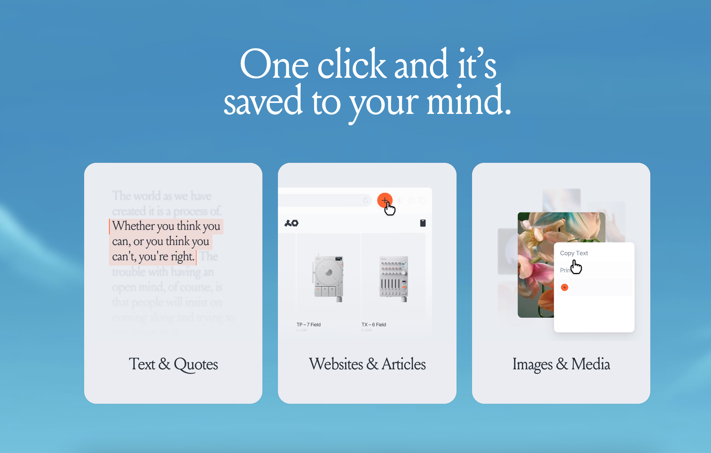

What do you need today? Vent. Honour. Guidance. Disconnect. Remember.
A gathering of candidates. Hover over any word to sit with its meaning.
A gathering of references. Hover any image to see it larger.
Phrases heard, observations drawn.